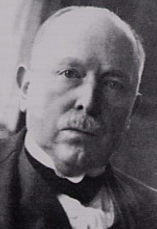

|  |
limbal girdle of Vogt = Corneal opacity that occurs in an arc concentric pattern and is adjacent to the limbus within the palpebral fissure at 3 and 9 o'clock; it is more common nasally than temporally, but it is frequently both.It is found in 60% of patients older than 40 years and occurs more frequently in women than in men.
Vogt's striae = Vertical stress lines seen deep in the affected stroma of keratoconus.
Vogt's anterior mosaic crocodile shagreen = Anterior mosaic crocodile
shagreen appears as bilateral, polygonal, grayish-white opacities in the
deep layers of the epithelium and in
Bowman's layer.
Vogt-Koyanagi-Harada (VKH) syndrome = it is a systemic inflammatory condition involving the eye, as well as other organs commoner in certain races.
Vogt developed techniques for retinoscopy and the surgical management of retinal detachment. In 1913 he began using the newly constructed slit-lamp in conjunction with a corneal microscope to examine the structures of the anterior regions of the eye. This work resulted in his 3-volume textbook, first published in 1921. Vogt was a leading figure in ophthalmology and he received the prestigious Donders and Gullstrand medals for his achievements.
Vogt introduced cyclodiathermy for the treatment of glaucoma. Some believe that Francisco Goya suffered from this syndrome and that the sudden onset of deafness resulted in the dramatic change of his style from paintings which were colourful and gay to scenes depicting devastation and death characteristic of his “black period”.
His last years were darkened by the death of his son in an avalanche
in the Swiss Mountains, and by chronic ill-health due to a renal disorder.
"The Zurich Eye Clinic under Professor Vogt certainly was an efficiently
run, hardworking and productive institute. Vogt kept close reins on the
staff and by strict discipline, which would make some of our contemporary
house staff shudder, produced maximal performance."
His biographer
Remembrances of Things Past. 1923-1943: The era of Alfred Vogt.
Survey of Ophthalmology, Boston, 1974, 19: 31-37.